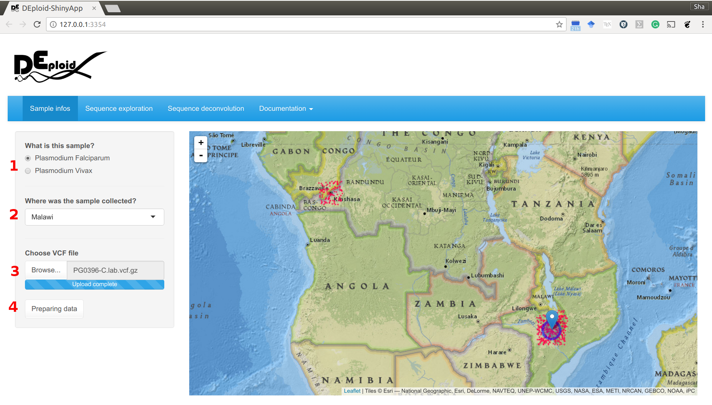

DEploid-ShinyApp is a user-friendly web interface for DEploid, which is designed for deconvoluting mixed genomes with unknown proportions. Traditional ‘phasing’ programs are limited to diploid organisms. Our method modifies Li and Stephen’s algorithm [Li2003] with Markov chain Monte Carlo (MCMC) approaches, and builds a generic framework that allows haplotype searches in a multiple infection setting.
DEploid is primarily developed as part of the Pf3k project, which is a global collaboration using the latest sequencing technologies to provide a high-resolution view of natural variation in the malaria parasite Plasmodium falciparum. Parasite DNA are extracted from patient blood sample, which often contains more than one parasite strain, with unknown proportions. DEploid is used for deconvoluting mixed haplotypes, and reporting the mixture proportions from each sample. In this documentation, we show deconvolution process can be completed by a few button clicks.

| [Li2003] | Li, N. and M. Stephens (2003). Modeling linkage disequilibrium and identifying recombination hotspots using single-nucleotide polymorphism data. Genetics 165(4), 2213–2233. |